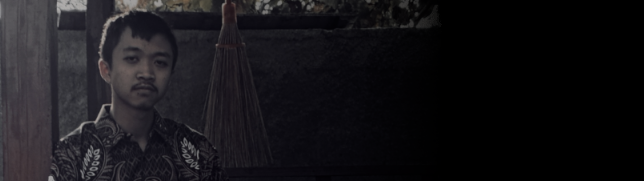

This certificate is obtained by completing the final assignment of the DevOps learning class organized by Dicoding.
(link)
Telah mengikuti ujuan sertifikasi komputer (USK) pada tahun 2023/2024 yang diselenggarakan pada tanggal 13 - 15 Maret 2024 bertempat di SMA Negeri 1 Sirampog. dinyatakan lulus dengan hasil amat baik
(link)
certificate from dicoding for completing the machine learning class
(link)